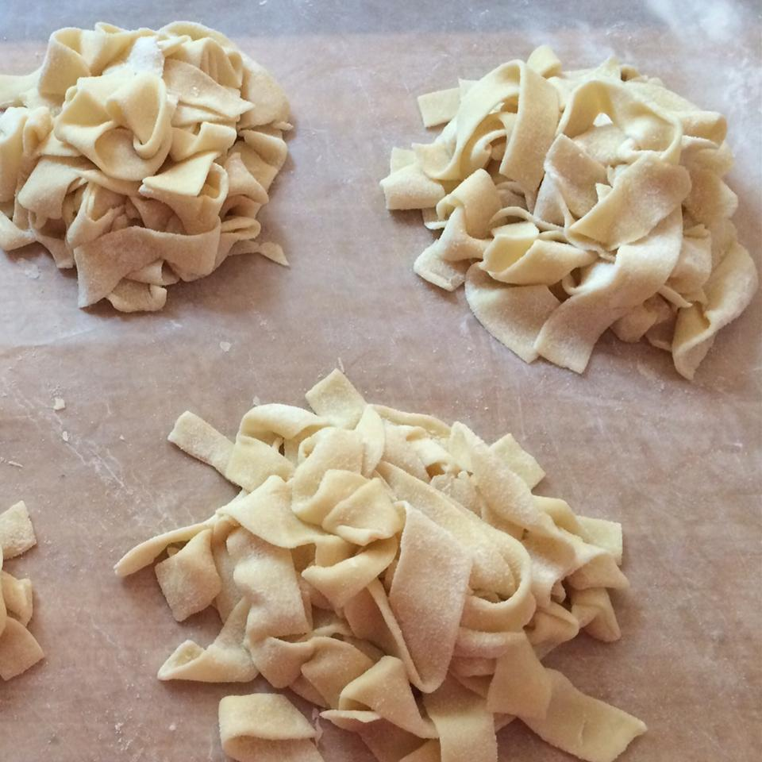

Homemade Egg Noodles

Description
This recipe describes how to make homemade egg noodles. Although it may be basic, the noodles are still quite delicious!
Ingredients
- 2 1/2 cups all-purpose flour
- 1 pinch salt
- 2 eggs, beaten
- 1/2 cup milk
- 1 tablespoon butter
Steps
- In a large bowl, add the flour and salt and stir together.
- Add the beaten egg, milk, and butter to the bowl and mix.
- Knead dough until smooth.
- Let the dough rest in a covered bowl for 10 minutes.
- On a floured surface, roll dough out to 1/8 or 1/4 inch thickness.
- Cut into desired lengths and shapes.
- Allow to air dry before cooking.
- In a large pot with boiling salted water, cook fresh pasta until al dente.
Return to Home